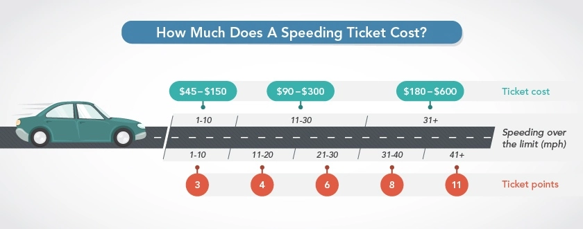

What If?
Driving Speed, Time, and Destination
If you drive at mph
and your destination is within miles,
you
will reach your destination in minutes.
Speed Limit and Speed Ticket
If your speed limit is mph and you want to reach your destination in
minutes, you need to drive at
mph.
Being mph over the speed limit, you assume there is % chance
of getting a speed ticket worth $ or
the ticket price with the probability taken into account of ( % x $ = ) $.
 Source: New York Speeding Fines
Time vs. Money Analysis
If you earn $/hr, which is
$/min, you will need to work
minutes to pay for the full $ speed ticket.
However, taking the probability in account, the average ticket price is $ ( = % x $ ).
As you wanted to reach your destination in minutes, you are earning an equavalent value of $.
Would you speed up and pay the analytically calculated ticket price of $ but earn $ from saving the time?
Note: Speeding is always a threat to not only you but also to people around you. This analysis is demonstrated for certain theoretical purposes and should not be considered seriously.